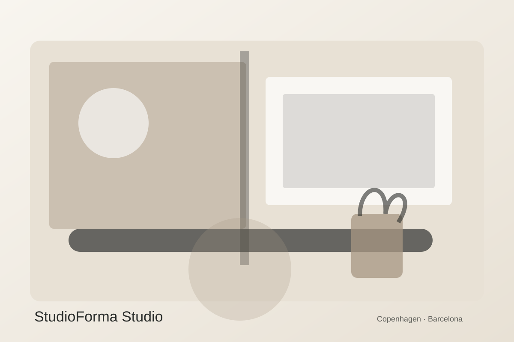

Studio
Small team.
Wide perspective.
A fictional multidisciplinary studio bringing together interior architecture, furniture, material research and visual communication.

Core team
Creative Director
Elena Varga
Spatial concept, residential design and material direction.
Design Lead
Jonas Lind
Hospitality, detailing and lighting coordination.
Project Designer
Mara Costa
Workplace strategy, furniture and visual research.
What we value
Curiosity
We test assumptions before repeating familiar solutions.
Restraint
Not every surface needs to speak. Hierarchy creates calm.
Care
Small decisions in thresholds, handles and lighting shape everyday experience.